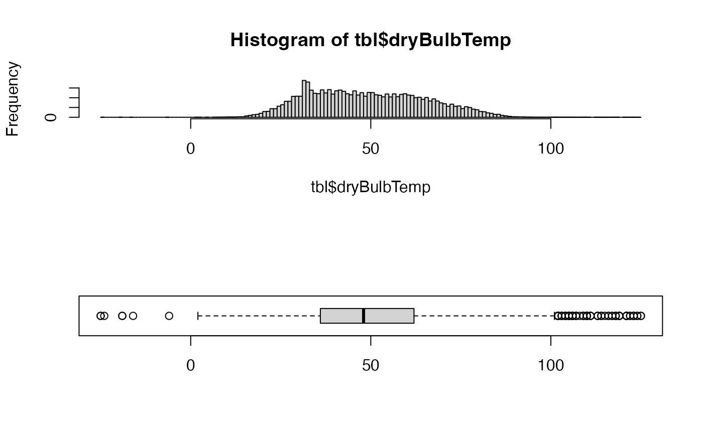
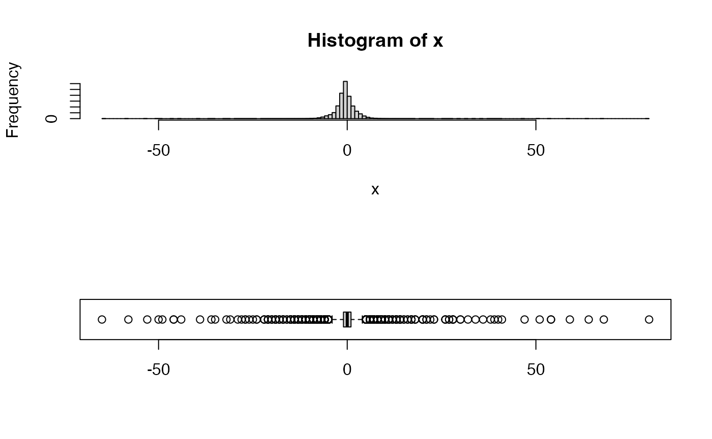

vignettes/articles/Raw_Data_Validation.Rmd
Raw_Data_Validation.RmdIn ths document, we will examine raw data obtained from https://cefa.dri.edu/raws/fw13/ and do some basic exploratory statitics to better understand any data quality issues that might exist.
Here, we use the RAWSmet package to download and parse data for a single location. No cleanup or QC is performed. We are only bringing the data into memory in R so we can analyze it.
library(dplyr)
library(RAWSmet)
setRawsDataDir("~/Data/RAWS")
# Load data for NWSID 040203 -- "BLUE RIDGE (KNF)"
tbl <-
cefa_downloadData(nwsID = "040203") %>%
cefa_parseData()
# Show variables
names(tbl)## [1] "recordType" "nwsID" "observationDate"
## [4] "observationTime" "observationType" "weatherCode"
## [7] "dryBulbTemp" "atmosMoisture" "windDirection"
## [10] "avWindSpeed" "fuelMoisture" "maxTemp"
## [13] "minTemp" "maxRelHumidity" "minRelHumidity"
## [16] "precipDuration" "precipAmount" "wetFlag"
## [19] "herbaceousGreenness" "shrubGreenness" "moistureType"
## [22] "measurementType" "seasonCode" "solarRadiation"
## [25] "maxGustDirection" "maxGustSpeed" "snowFlag"In order to plot data, we need a valid POSIXct time
axis. We create one here for a station in California reporting in local
time.
datetime <-
paste0(tbl$observationDate, tbl$observationTime) %>%
MazamaCoreUtils::parseDatetime(timezone = "America/Los_Angeles")The first thing to do with any variable is simply look at it. We plot it here with different values for partial opacity to better see overplotted values.
layout(matrix(seq(2)))
plot(datetime, tbl$dryBulbTemp, pch = 15, cex = 0.4, col = adjustcolor("black", 0.1))
plot(datetime, tbl$dryBulbTemp, pch = 15, cex = 0.4, col = adjustcolor("black", 0.004))
layout(1)In the upper plot, our eyes notice a few lone outliers and a an outbreak of outliers in the winter of 2014.
In the lower plot, we can see a ‘line’ of overplotted values near 32 F.
Every atmospheric measurement has reasonable physical limits to its range. Temperature in the continental US has rarely, if ever exceeded -50 F to +130 F.
Now let use a histogram and box plot to better see the distribution of values.
layout(matrix(seq(2)))
hist(tbl$dryBulbTemp, n = unitBreaks)
boxplot(tbl$dryBulbTemp, horizontal = TRUE)
layout(1)So far, so good. We have a reasonably smooth distribution of values with a few outliers and an expected spike in readings near the freezing point of water. Temperature should be expected to hover briefly near this phase change point, as latent heat associated with freezing or melting water is not measured by the dry-bulb temperature.
Every atmospheric variable also has bounds on its rate of change. We can examine that distribution a well.
layout(matrix(seq(2)))
x <- diff(tbl$dryBulbTemp)
hist(x, n = unitBreaks)
boxplot(x, horizontal = TRUE)
layout(1)This distribution looks reasonable even if some of values (> 50F/hr) seem questionable.